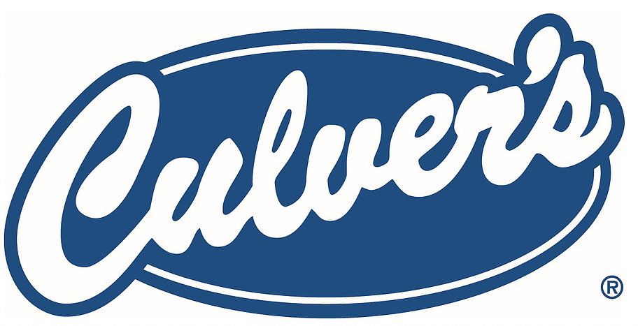

Walker and Wylde were two homeless guys living in one van as they traveled from coast to coast in Canada. they made Indie folk/ blue grass music, busking for money whenever they could. they dropped their first episode on January 1st, 2021 labeled "There Are Gods in Little Men." They periodically dropped new songs, until Febuary 2nd 2022, when they dropped their first album "Secondhand Existential Crisis." they released their last album "Corporate Sponsored Sunday School" on may 12th, 2023. After the last album, the duo split up to do their own things. Walker went on to keep making music and is currently making a paper zine under the name Blue Jay Walker.

Wynncraft has been around for a long time, releasing on april 13th, 2013. over the many years it has been out, it has gone through many changes, and another massive change is about to come out with the Fruma update, which has been 7 years in the making. Currently i am a director of Community in a top 50 guild called Hallowed Sanctum.

Project Moon is an independent game studio that made a setting called "The City," which is ruled over by 26 different corporations called wings, one for each letter. These companies have developed powerful technology called "singularities." These can control the flow of time, create portals, or monsters to extract energy from. The first game starts you off as a manager of a wing's main facility in L Corp, otherwise known as Lobotomy Corporation. you are assisted by an AI called Angela. After the events of the true ending of Lobotomy Corporation, the next game in the series picks up after L Corp falls. you follow Angela and a character called Roland in the Library, which has been established in the fallen wing's place. After the true end of library of Ruina, two of the books takes place between Library of Ruina and the next game, Limbus Company.
Dungeons and Dragons (also known as D&D) is one of the most popular TTRPG there is, with about 50 million people playing since it first released in 1974. Since then, it has had five main editions released, with some having revisions. the first edition, known as D&D 1e or Advanced Dungeons and Dragons (AD&D). the current edition is called D&D 5e 2024, or 5.5e. There are quite a few revisions, and the one i play is D&D 3.5e. it is quite number crunchy, but i find it fun.

The reason why i have Culver's on here is because I have worked there for 3 years now. I started over three years ago, back when I was in eighth grade. I made some great friends there and it is a good place to work.
P
P
P
P
P